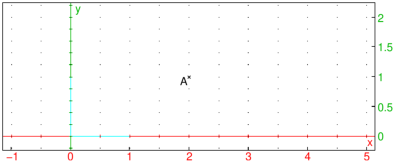
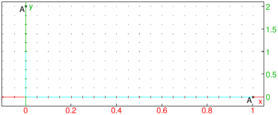
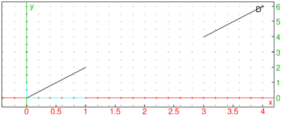

24.10.1 Circles and arcs in the plane
See also Section 24.10.2.
See Section 25.9.1 for circles in space.
The circle
command creates circles and arcs. You can specify the
circle in different ways.
-
circle can take one argument:
eqn, the equation of a circle with variables x and
y (or an expression assumed to be set to 0).
circle(eqn) returns and draws the circle. For example:

- circle can take two arguments:
-
P, a point.
- α, a complex number.
circle(P,α) returns and draws the circle centered
at P and whose radius is |α|. For example:

- circle can take two arguments:
A,B, two points (where B must be the value of
point and not simply the affix).
circle(A,B) returns and draws the circle whose
diameter is AB. For example:
- circle can take four mandatory arguments and two
optional arguments:
-
C, a point.
- r, a complex number.
- a,b, two real numbers.
- Optionally, var1,var2, variable names.
circle(C,r,a,b) returns and draws an arc of the
circle with center C and radius |r|, with central angles a
and b. The angles start on the axis defined by C and C+r.If the arguments var1 and var2 are given,
they will be assigned to the ends of the arc.
For example:

| circle(-1,point(i),0,pi/4) |